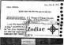
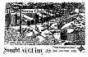
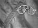
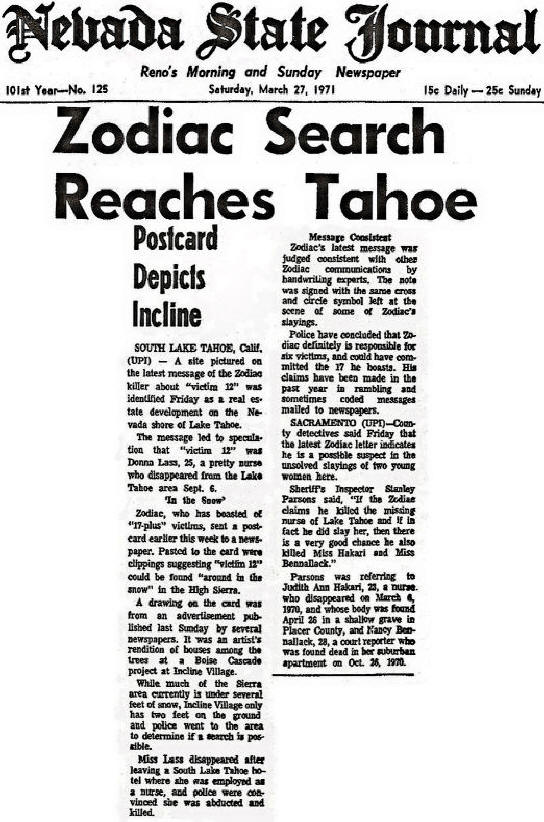
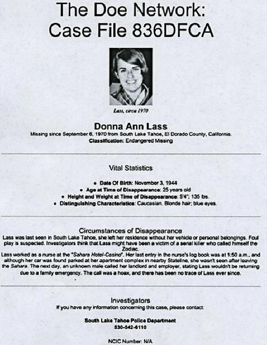

|
Donna
Lass, R.N. - Zodiac Victim |
| |
|
|
|
Donna
Lass, 1970 at Age 25 |
|
Picture courtesy of Tom Voigt |
| |
|
Click on
each thumbnail for a close-up view. |
|
Click on
the
blue
lettering for additional
information. |
| |
|
Donna
Lass was a pretty twenty-five year old woman with frosted blonde
hair and blue eyes. She worked as a nurse at the Sahara
hotel in Stateline, Nevada and was by all accounts a
"good girl". On Labor Day, September 6, 1970 Ms. Lass
disappeared and some believe she was abducted from work
by the Zodiac killer. The following day, a man
called the Sahara Hotel to say that Ms. Lass was sick
and would not be coming in. This man also called her
landlord to tell him that she was leaving and not coming
back. It was reasoned that the man who called had
something to do with her disappearance, but authorities
were at a loss to determine her whereabouts and feared
the worst. |
| |
|
 |
One month later the San Francisco Chronicle received a
postcard paste-up. |
|
There were 13
holes (each one representing a victim) and a
cross drawn with |
|
human blood
in the center of the card. (Ms. Lass' ?) Six months
after she |
|
vanished another paste-up postcard was sent to the San
Francisco Chronicle, |
|
the
San Francisco Examiner, and the Times.
On the back of this card was a |
|
|
picture of Incline (death?)
Village in
the area of Lake Tahoe. The pasted-on |
 |
|
words read: "Sought victim
12," "Pass Lake Tahoe areas," "Sierra
Club," |
|
"Peek through
the pines," and "around in the snow."
As time passed, the |
|
disappearance of Donna
Lass faded from memory. |
|
|
|
|
The postcard that was sent to the newspapers shortly after Ms.
Lass' disappearance stated, "Pass (Past/Path?)
Lake Tahoe
areas" and "Sierra Club". Tappan Lodge was owned by the Sierra Club and
built by them in 1934. The 13 stones comprising the cross fit with
the October 1970 postcard that had 13 holes punched in it and a
cross that was drawn in human blood. |
| |
|
 |
Mr. Fredericks carefully photographed the
"gravesite" but it wasn't until several
years later that his discovery was revealed
to Harvey Hines, a former police
investigator. Later, Hines informed Dave
Peterson, a Zodiac expert and retired
police reporter. Peterson later
excavated
the site. A pair of woman's crushed sunglasses were found
about 14 inches under
the soil. The sunglasses were |
|
|
entirely green (frame and
lenses) and were the same type supposedly worn by Ms.
Lass. Earlier, when Peterson saw the photos of the site
he immediately identified the structure (of wood and
stone) as Rosicrucian symbols, a society with which
Charles Manson and Zodiac suspect Bruce Davis were very
familiar. Peterson later mulled over the possibility
that Ms. Lass' killer rhymed Donner Pass (the site was
on Donner Summit) with Donna Lass. Zodiac had concocted
a "poem" that referred to murder victim Cheri Jo Bates
and inscribed it on a desk in 1966. |
|
|
|
Another
point of interest is the fact that a former wife of Roman Polanski
(husband of Sharon Tate, who was murdered by the Manson Family) was
a Polish actress who's name was Lass. |
|
|
|
 |
|
Reno, Nevada
Nevada State Journal, March 27, 1971 |
|
|
|
|
|
 |
|
|
|
|
|
Click here to see:
more Donna Lass
related information |
|
|
|
|
|
Back
Top
of page |
|
|
|
The
Water Connection |
| |
|
Water held a very important place in the symbolic teachings of Celtic / Druid lore. Charles Manson studied these subjects and in at least one taped interview affirmed Druidism. Manson instructed the Family that, whenever possible, they were to conduct their "activities" near water or it's symbolic representation. As Manson went so went Bruce Davis - both believed alike. |
| |
|
Cheri Jo Bates was killed at Riverside City College in
Riverside, California. The killer's car was parked on
Riverside Drive. In a typed letter the killer indicated that Bates was not the first. |
| |
|
Go back to 1963 and a couple was killed in Santa Barbara near water. This case is unsolved. In 1964 the unsolved
Seaside Honeymoon Murders in San Diego were committed right next to the ocean. In Zodiac's 1968 attack, the couple was murdered on
Lake Herman Road, very near the lake itself. In 1969 Zodiac attacked a couple at Blue Rock
Springs. He may have left the area using
Lake Herman Rd. The killer made his phone call from the intersection of Tuolumne and
Springs Road. In September of that year he attacked another couple at
Lake Berryessa and made a phone call from near the Napa Car
Wash. Came October and Zodiac murdered a cab driver in San Francisco on
Washington St. very near to a
fire
hydrant. At least one suspected Zodiac killing took place in
Lake
County. Donna Lass (a possible Zodiac victim) disappeared
from near
Lake Tahoe. |
| |
|
On at least one occasion the killer appeared in Navy-like clothing. Zodiac was also interested in astrology and when the attack dates and times are astrologically charted the three water signs and their associated planets figure
prominently. |
| |
|
Back |
| |
| |